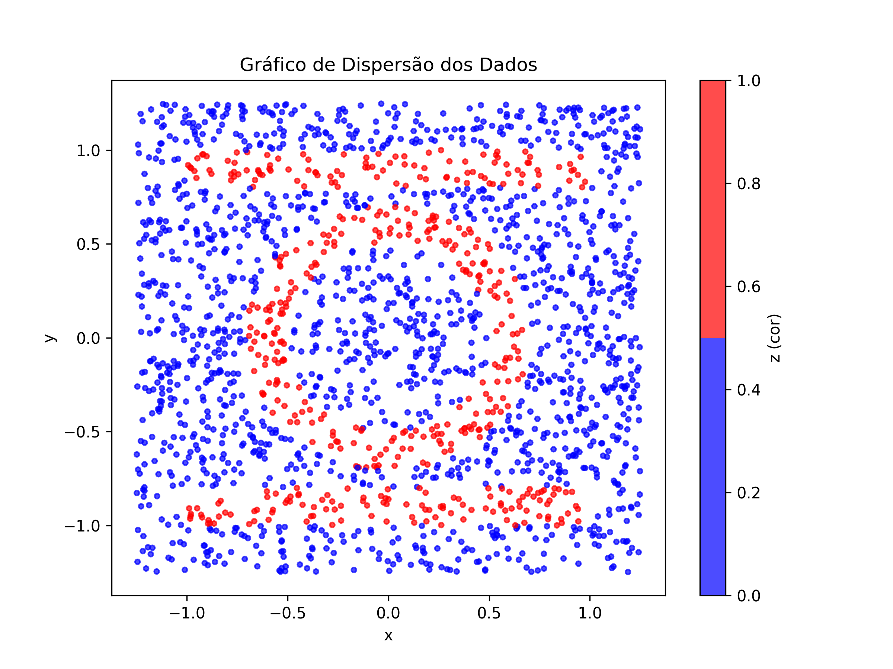
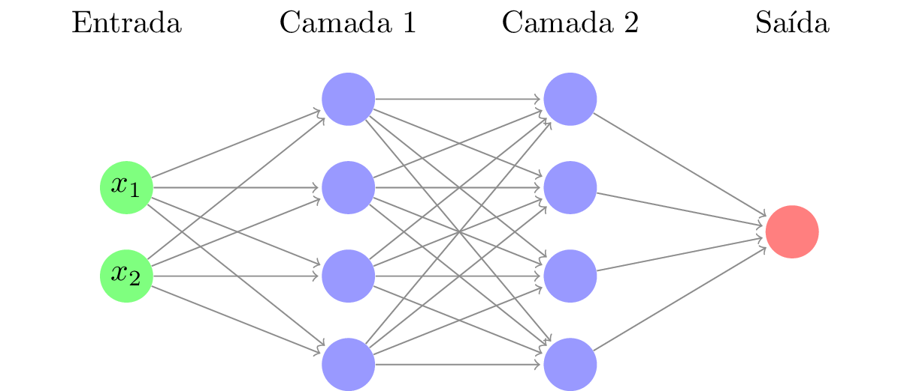

class: center, middle # Treinando redes neurais --- ## Função objetivo O conjunto $C = R_1 \cup R_2 \cup R_3$ é a reunião de 3 regiões do $\mathbb{R}^2$. $$ R_1 = [-1,1]\times[0.8,1] $$ $$ R_2 = [-1,1]\times[-1,-0.8] $$ $$ R_3 = \left\\{ \frac{1}{4} < x^2 + y^2 < \frac{1}{2} \right\\} $$ Queremos aproximar a função indicadora do conjunto $C$. $$\chi_C(x,y) = \begin{cases} 1 & (x,y) \in C \\\\ 0 & (x,y)\notin C \end{cases}$$ --- ## Conjunto objetivo <div style="display: flex; justify-content: center;"> <img src="../experimentos/Região Interesse NN.png" alt="Região de interesse" height="450px"> </div> --- ## Amostragem ```python def funcao_caracteristica(x,y): """Define meu conjunto esperado""" if abs(x) > 1 or abs(y) > 1: return 0 if abs(y) > 0.8: return 1 raio = x**2 + y**2 if raio < 0.5 and raio > 0.25: return 1 else: return 0 K = 2.5 # dispersão dos dados N = 2000 # Dados uniformes # random() gera um número aleatório entre 0 e 1 DADOS = [] for i in range(N): x = K*(random()-1/2) # varia de [-K/2, K/2] y = K*(random()-1/2) z = funcao_caracteristica(x,y) DADOS.append([x,y,z]) ``` --- ## Dados de treinamento <div style="display: flex; justify-content: center;">  </div> --- ## Arquitetura das redes - As redes neurais variando de 1 a 3 camadas ocultas. - O tamanho de cada camada oculta foi calculada de modo que o número de parâmetros seja mais ou menos o mesmo para cada rede. - O número de parâmetros foi variando de 128, 512 ou 1024 parâmetros. --- ## Rede 1 - 1 camada oculta com $n_1$ neurônios - total de $4n_1 + 1$ parâmetros | $n_1$ | # parâmetros | |------:|:-----------| | 16 | 129 | | 128 | 513 | | 256 | 1025 | -- <div style="display: flex; justify-content: center; position: absolute; top: 0; right: 0; background-color: #DDD;"> </div> --- ## Rede 2 - 2 camadas ocultas com $n_2$ neurônios - total de $n_2^2 + 5n_2 + 1$ parâmetros. | $n_2$ | # parâmetros | |------:|:---------| | 9 | 127 | | 20 | 501 | | 30 | 1051 | -- <div style="display: flex; justify-content: center;">  </div> --- ## Rede 3 - 3 camadas ocultas com $n_3$ neurônios - total de $2n_3^2 + 6n_3 + 1$ parâmetros. | $n_3$ | # parâmetros | |------:|:---------| | 7 | 141 | | 15 | 541 | | 21 | 1009 | <div style="display: flex; justify-content: center;"> </div> --- ## Funções de ativação As funções de ativação utilizadas foram as seguintes: - Nas camadas ocultas: - ReLU $$\text{ReLU}(x) = \max(0,x)$$ - Sigmóide de Sontag, com $\alpha=100$ $$\text{Sontag}(x) = \frac{1}{\pi}\arctan(x) + \frac{\cos(x)}{\alpha(1+x^2)} + \frac{1}{2}$$ - Na camada de saída: - Sigmoide $$\sigma(x) = \frac{1}{1+e^{-x}}$$ --- Em vermelho a <span style="color: red;">sigmoide comum</span>, em azul a <span style="color: blue;">sigmoide de Sontag</span>. <div style="display: flex; justify-content: center;"> </div> > Sontag cresce mais rápido perto de zero, mas tem um crescimento mais lento para valores altos. --- ## Treinamento ```python def train_model(model, num_epochs=1000): # Define the loss function and optimizer loss_fn = nn.MSELoss() # Erro quadrático médio optimizer = torch.optim.Adam(model.parameters(), lr=0.01) # otimizador Adam com taxa de aprendizado 0.01 mean_loss = [] # Training loop for epoch in range(num_epochs): for X, y in dataset_loader: # Zero the gradients optimizer.zero_grad() # Forward pass outputs = model(X) # Compute the loss loss = loss_fn(outputs.squeeze(), y) # Backward pass and optimization loss.backward() optimizer.step() mu = loss.item() # Vamos salvar o valor da função de perda para plotar depois mean_loss.append(mu) if epoch % 100 == 0: # a cada tanto tempo, dá um sinal de vida sys.stdout.write(f'\r{model.name}, Epoch [{epoch+1}/{num_epochs}], Loss: {mu:.4f}') sys.stdout.flush() return mean_loss ``` --- ## Resultados - Resumimos os resultados com um mapa de calor, onde cada ponto $(x,y)$ é colorido de acordo com a saída da rede neural. - A cor azul representa a saída 0 e a cor vermelha representa a saída 1. - Apresentamos também um boxplot com a função de perda ao longo do treinamento. --- ## Redes 1 camada, $n_1=32$ <div style="display: flex; justify-content: center; margin-top: 50px;"> <img src="../experimentos/ReLU 1 (32).png" alt="Resultado " width="50%"> <img src="../experimentos/Sontag 1 (32).png" alt="Resultado " width="50%"> </div> --- ## Redes 1 camada, $n_1=32$ <div style="display: flex; justify-content: center; margin-top: 50px;"> <img src="../experimentos/ReLU 1 (32) loss.png" alt="Resultado " width="50%"> <img src="../experimentos/Sontag 1 (32) loss.png" alt="Resultado " width="50%"> </div> --- ## Redes 1 camada, $n_1=128$ <div style="display: flex; justify-content: center; margin-top: 50px;"> <img src="../experimentos/ReLU 1 (128).png" alt="Resultado " width="50%"> <img src="../experimentos/Sontag 1 (128).png" alt="Resultado " width="50%"> </div> --- ## Redes 1 camada, $n_1=128$ <div style="display: flex; justify-content: center; margin-top: 50px;"> <img src="../experimentos/ReLU 1 (128) loss.png" alt="Resultado " width="50%"> <img src="../experimentos/Sontag 1 (128) loss.png" alt="Resultado " width="50%"> </div> --- ## Redes 1 camada, $n_1=256$ <div style="display: flex; justify-content: center; margin-top: 50px;"> <img src="../experimentos/ReLU 1 (256).png" alt="Resultado " width="50%"> <img src="../experimentos/Sontag 1 (256).png" alt="Resultado " width="50%"> </div> --- ## Redes 1 camada, $n_1=256$ <div style="display: flex; justify-content: center; margin-top: 50px;"> <img src="../experimentos/ReLU 1 (256) loss.png" alt="Resultado " width="50%"> <img src="../experimentos/Sontag 1 (256) loss.png" alt="Resultado " width="50%"> </div> --- ## Redes 2 camadas, $n_2=9$ <div style="display: flex; justify-content: center; margin-top: 50px;"> <img src="../experimentos/ReLU 2 (9, 9).png" alt="Resultado " width="50%"> <img src="../experimentos/Sontag 2 (9, 9).png" alt="Resultado " width="50%"> </div> --- ## Redes 2 camadas, $n_2=9$ <div style="display: flex; justify-content: center; margin-top: 50px;"> <img src="../experimentos/ReLU 2 (9, 9) loss.png" alt="Resultado " width="50%"> <img src="../experimentos/Sontag 2 (9, 9) loss.png" alt="Resultado " width="50%"> </div> --- ## Redes 2 camadas, $n_2=20$ <div style="display: flex; justify-content: center; margin-top: 50px;"> <img src="../experimentos/ReLU 2 (20, 20).png" alt="Resultado " width="50%"> <img src="../experimentos/Sontag 2 (20, 20).png" alt="Resultado " width="50%"> </div> --- ## Redes 2 camadas, $n_2=20$ <div style="display: flex; justify-content: center; margin-top: 50px;"> <img src="../experimentos/ReLU 2 (20, 20) loss.png" alt="Resultado " width="50%"> <img src="../experimentos/Sontag 2 (20, 20) loss.png" alt="Resultado " width="50%"> </div> --- ## Redes 2 camadas, $n_2=30$ <div style="display: flex; justify-content: center; margin-top: 50px;"> <img src="../experimentos/ReLU 2 (30, 30).png" alt="Resultado " width="50%"> <img src="../experimentos/Sontag 2 (30, 30).png" alt="Resultado " width="50%"> </div> --- ## Redes 2 camadas, $n_2=30$ <div style="display: flex; justify-content: center; margin-top: 50px;"> <img src="../experimentos/ReLU 2 (30, 30) loss.png" alt="Resultado " width="50%"> <img src="../experimentos/Sontag 2 (30, 30) loss.png" alt="Resultado " width="50%"> </div> --- ## Redes 3 camadas, $n_3=7$ <div style="display: flex; justify-content: center; margin-top: 50px;"> <img src="../experimentos/ReLU 3 (7, 7, 7).png" alt="Resultado " width="50%"> <img src="../experimentos/Sontag 3 (7, 7, 7).png" alt="Resultado " width="50%"> </div> --- ## Redes 3 camadas, $n_3=7$ <div style="display: flex; justify-content: center; margin-top: 50px;"> <img src="../experimentos/ReLU 3 (7, 7, 7) loss.png" alt="Resultado " width="50%"> <img src="../experimentos/Sontag 3 (7, 7, 7) loss.png" alt="Resultado " width="50%"> </div> --- ## Redes 3 camadas, $n_3=15$ <div style="display: flex; justify-content: center; margin-top: 50px;"> <img src="../experimentos/ReLU 3 (15, 15, 15).png" alt="Resultado " width="50%"> <img src="../experimentos/Sontag 3 (15, 15, 15).png" alt="Resultado " width="50%"> </div> --- ## Redes 3 camadas, $n_3=15$ <div style="display: flex; justify-content: center; margin-top: 50px;"> <img src="../experimentos/ReLU 3 (15, 15, 15) loss.png" alt="Resultado " width="50%"> <img src="../experimentos/Sontag 3 (15, 15, 15) loss.png" alt="Resultado " width="50%"> </div> --- ## Redes 3 camadas, $n_3=21$ <div style="display: flex; justify-content: center; margin-top: 50px;"> <img src="../experimentos/ReLU 3 (21, 21, 21).png" alt="Resultado " width="50%"> <img src="../experimentos/Sontag 3 (21, 21, 21).png" alt="Resultado " width="50%"> </div> --- ## Redes 3 camadas, $n_3=21$ <div style="display: flex; justify-content: center; margin-top: 50px;"> <img src="../experimentos/ReLU 3 (21, 21, 21) loss.png" alt="Resultado " width="50%"> <img src="../experimentos/Sontag 3 (21, 21, 21) loss.png" alt="Resultado " width="50%"> </div> --- ## Conclusões A tabela abaixo resume o erro de classificação para uma amostra de 1000 pontos, em que * representa o melhor resultado por linha. | Tamanho do Modelo | ReLU | Sontag | |--------------------|--------|--------| | 32 | 0.099 | 0.064* | | 128 | 0.04 | 0.03* | | 256 | 0.048 | 0.027* | | (9, 9) | 0.06* | 0.089 | | (20, 20) | 0.039 | 0.025* | | (30, 30) | 0.028 | 0.022* | | (7, 7, 7) | 0.126 | 0.035* | | (15, 15, 15) | 0.029 | 0.022* | | (21, 21, 21) | 0.037 | 0.014* |